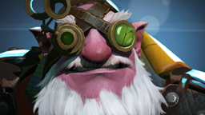

A Brief History of Suffering
- 2011 — people discovered Dota 2.
- 2013 — people discovered MMR.
- 2013 — people discovered 322 (Solo incident).
- 2018 — people discovered that highground is dangerous.
- 2020 — people discovered Pudge.
- 2026 — people still blame support.
Humanity has learned nothing.
The Meme Museum
Each exhibit has been catalogued, verified by absolutely nobody, and preserved for future generations of ranked players.
322
THE NUMBER
Classification: Historical meme
Origin: StarLadder StarSeries, 14 June 2013
Match: RoX.KIS vs zRage
Backstory: Midlaner Alexei 'Solo' Berezin placed a $100 bet on the opposing team at 3.22 odds, then lost the match intentionally. Winnings: $322. The bookmakers flagged the bet, the scandal became the story of the month in esports.
Danger level: HIGH
Fountain Hook
THE TELEPORTATION INCIDENT

Weapon class: Pudge (Meat Hook)
Mechanism: Hook travels while Pudge is teleported — victim arrives at the fountain instead of Pudge's original location
Historical impact: Catastrophic
Arteezy Cliff
THE CLIFFTEEZY PHENOMENON
Terrain type: Unforgiving
Escape probability: Questionable
Known incidents: Multiple, including Shanghai Major 2016 era
Status: The meme outlived every cliff on the map
Give DIRETIDE
THE VOLVO INCIDENT
Background: First Diretide Halloween event launched in 2012
Trigger: 31 October 2013 — Valve did not release Diretide
Community response: #GiveDiretide campaign on Twitter, Reddit, Steam reviews, and the Volvo car subreddit
Outcome: Valve brought Diretide back that same year, 2013
The Old God

"HE HAS AWAKENED."
STATUS: ASCENDED
AURA: 100%
WEAPON: EYE LASERS
ARCHIVE CLASS: LEGENDARY
Real identity: Stariy Bog (Vladislav Levenets)
Vladislav Levenets created the "Old God" persona. The nickname spread so far it became a standalone expression — used even by people who have never played Dota.
Streamer Archive
The following reactions have been observed across all major Dota 2 broadcast platforms.

Papich
CLASSIFICATION: STREAMER / VELICHAYSHIY
Real name: Vitaly
Known for: Dota 2 streams, reactions, absolute chaos, "В соляного"
Nickname: "Velichayshiy" (The Greatest)
Player dies
Support buys Dagon
Carry farms 45 minutes
Player Species — Field Guide
23 years of field research. 5 documented species. None of them buy wards.
SPECIES #001
Pudge Player
Habitat: Mid | Weapon: Hook | Accuracy: Classified
Excuse after miss: Lag
Threat: 5/5 SPECIES #002
SPECIES #002
Invoker Player
Spells: 10 | Used: 2 | Arcana: Required | FPS: 37
Threat: 4/5 SPECIES #003
SPECIES #003
Techies Player
Primary: Mines | Secondary: More mines | Tertiary: Nobody has fun
Threat: 5/5 CRITICAL SPECIES #004
SPECIES #004
Anti-Mage Player
Farming: 40 min | Participation: 4% | Required item: One more
Threat: 4/5
SPECIES #005Sniper Player
Range: Yes | Position: Narnia | Defense: Hope
Threat: 3/5The Dota Dictionary
Official definitions, peer-reviewed by the Archive's linguistic department.
GG
noun
Something typed at minute 8.
SUPPORT DIFF
noun
An unexplainable phenomenon responsible for everything.
EZ
interjection
Usually said by the player who almost lost.
322
noun, verb, adjective
A number that permanently damaged the reputation of an otherwise innocent integer.
MID OR FEED
diplomatic expression
The beginning of negotiations nobody agreed to.
I'M FARMING
statement
A phrase spoken while four other people are fighting and losing without you.
The Laws of Dota
These have been observed in every pub, every bracket, every region. They cannot be broken.
- Pudge Law: If the hook missed — lag.
- Carry Law: The carry needs exactly one more item before fighting.
- Buyback Law: Buyback is needed immediately after spending all gold.
- Roshan Law: Roshan respawns the moment your team leaves the pit.
- Highground Law: The winning team will throw at highground at least once.
- Support Law: It is somehow always the support's fault.
Absolutely Scientific Statistics
Data collected by absolutely nobody.
| PEER-REVIEWED PUB DATA | |
|---|---|
| Research Category | Result |
| Games ruined by Pudge | 8,391,204 |
| Support blamed | 99.7% |
| Highground throws | 100% |
| Wards purchased | 12 |
| Players saying GG too early | 97% |
| Scientific accuracy | 12% |
| Meme accuracy | 100% |
| ⚠ Margin of error: yes. | |
| Conclusion | Everything is working as intended. |
Hall of Legends
- [DOSSIER 01] THE OLD GOD — Streamer culture (Stariy Bog / Vladislav Levenets)
- [DOSSIER 02] PAPICH — Streamer culture (Vitaly / "Velichayshiy")
- [DOSSIER 03] FOUNTAIN HOOK — Competitive history (TI3)
- [DOSSIER 04] 322 — Professional Dota, StarLadder, June 2013
- [DOSSIER 05] ARTEEZY CLIFF — Topographical incident analysis
- [DOSSIER 06] GIVE DIRETIDE — Global community mobilization, 2013